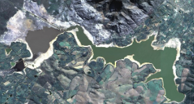
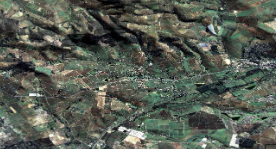
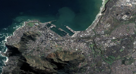

Turning Earth Observation data into actionable insights for decision-making, research, and planning.
Access data, tools, and products to support evidence-based decisions.

SPOT Analysis-Ready Data (ARD) enables users to analyze and extract information from the satellite dataset, alleviating the burden associated with data pre-processing.
Learn more
We provide user interfaces, co-designed with our stakeholders, that are easily understood and can be manipulated by a wide variety of end-users to obtain rapid analytics and insights across applications.
Learn more
Get access to our value-added products for built infrastructure such as human settlements and road and rail networks based on high-resolution commercial Analysis-ready-data from SPOT satellites.
Learn moreA feature-rich, web-based geospatial data explorer.
A Python-based environment providing technical users access and analysis tools to explore and conduct research.
Provides a standards-based interface to the metadata and datasets of DESA.
Web-based exploration of Open Data Cube collections – GitHub.